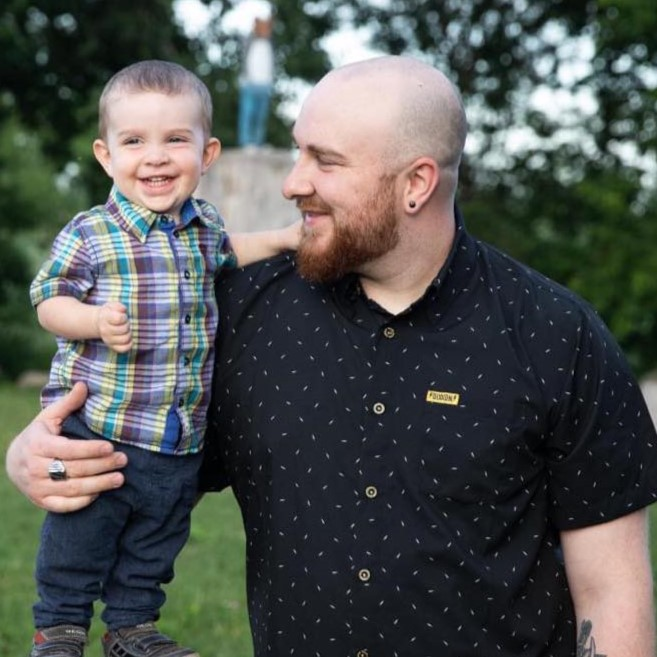

Alexandre Caron-Latour
Futur Développeur Web
Profil
Individu dévoué et enthousiaste entamant un voyage pour devenir un développeur web compétent avec une solide base en HTML. J'ai hâte d'appliquer la créativité, les compétences en résolution de problèmes et une maîtrise croissante du développement web pour contribuer efficacement à des projets dynamiques.
Caractéristiques
- Fondamentaux HTML : En commençant mon parcours de développement web avec une solide compréhension de HTML, je suis compétent dans la création de la structure des pages web.
- Résolution de problèmes : Grâce à une approche logique et analytique des défis, je possède la capacité d'identifier les problèmes dans les projets.
- Adaptabilité : Engagé à rester à la pointe du paysage en constante évolution du développement.
Éducation
Compétences Techniques
Expérience
- Point Zéro 8 2011 à 2023
- J'assurais la supervision, la coordination et l'amélioration des processus opérationnels pour garantir l'efficacité et la performance de l'entreprise.
- Contour Détour Montréal 2021 à 2022
- J'étais chargé de l'installation de lettrages sur différentes surface et de la réalisation de découpes, en plus d'assurer la propreté du garage.